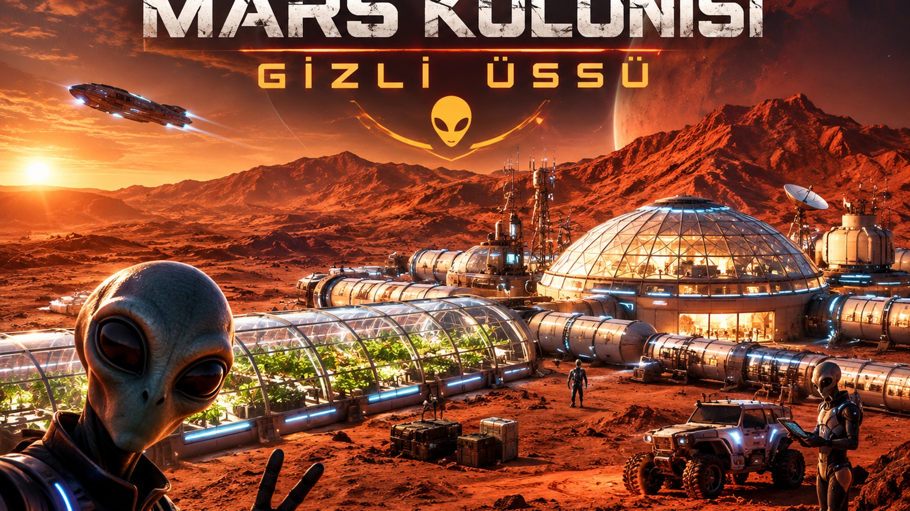
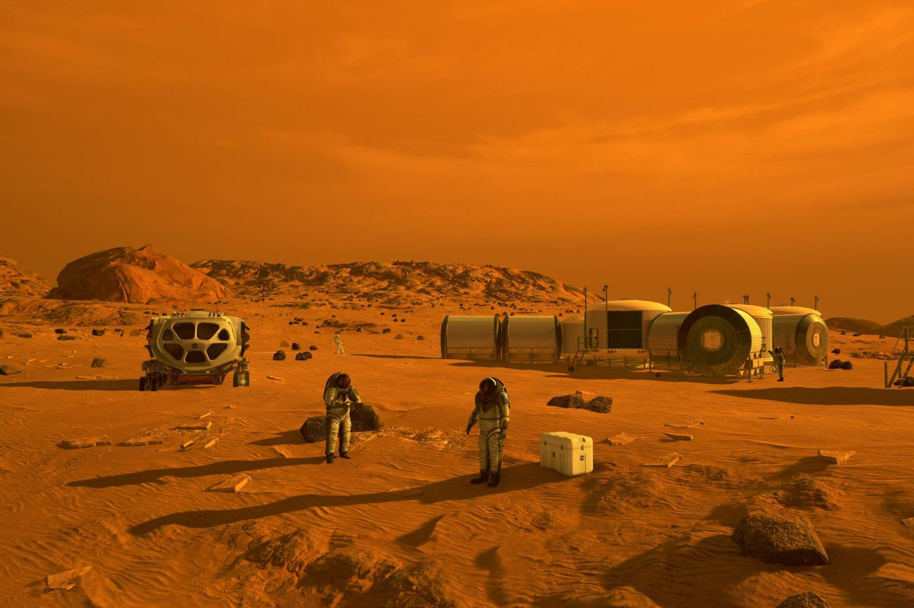

Kızıl Gezegendeki Yeni Yaşam Sınırları
Mars, Güneş Sistemi'ndeki dördüncü gezegendir. Yüzeyindeki demir oksit oranı nedeniyle "Kızıl Gezegen" olarak bilinir. Uzay araştırmalarının odağında yer alan Mars, insanlığın dünya dışı ilk kolonileşme hedefidir.
Güneş'e olan uzaklıkta 4. sıradadır.
Yüzey pasından dolayı kırmızı görünür.
Phobos ve Deimos adında iki uydusu vardır.

